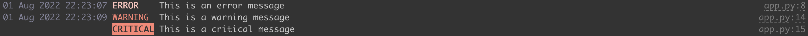
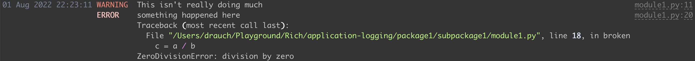

Logging
Contents
Logging#
Python comes with a very well-equipped library for logging. It gets even nicer when combined with Rich, a library for writing coloured and formatted text to the terminal.
In the following, I will sketch a logging system for an example application consisting of the following elements:
app.py– main script, application entry pointpackage1/– the package holding the application library__init__.pylogger.py– logging systemsubpackage1/– a subpackage belonging to the application library__init__.pymodule1.py– functions/classes that make use of the logging facilities
The logging system will come equipped with two logging handlers:
the
console_handler, which makes use of Rich’srich.logging.RichHandlerto print logs to the terminal andthe
file_handler, which is alogging.FileHandler(or similar) instance and handles logging to a text file
In this setup, every log message can be directed to both the console and a text file - with just
a single logging statement. Moreover, the system is flexible enough to assign different
logging levels
(DEBUG, INFO, WARNING, ERROR, CRITICAL) to each handler.
The logging system is set up as follows:
import logging
import logging.handlers
import rich.logging
# console handler
console_handler = rich.logging.RichHandler(log_time_format='%d %b %Y %X')
console_handler.setLevel(logging.WARNING)
# file handler
file_name = 'app.log'
file_handler = logging.FileHandler(file_name)
file_handler.setLevel('INFO')
file_formatter = logging.Formatter(
'%(asctime)s | %(levelname)-8s | %(name)s:%(lineno)s:%(funcName)s | %(message)s')
file_handler.setFormatter(file_formatter)
def get_logger(name):
"""
Call this function from all other modules and pass in the module name given by `__name__`
"""
logger = logging.getLogger(name)
# Set the logger to the lowest level so that the handlers can go down as low in level as needed.
# Every handler can specify its own level, which may be higher.
logger.setLevel(logging.DEBUG)
# add all handlers
logger.addHandler(console_handler)
logger.addHandler(file_handler)
return logger
First, both handlers are prepared - their logging levels are specified as well as the specifics of
their output formats, e.g. the formats of the timestamps. The keywords used for the
file_formatter encode which information is written to the logfile. These so-called LogRecord
attributes are listed here.
The function get_logger() can be called from any other module that belongs to the
application and its library and returns the logger instance responsible for that particular module.
In order to achieve this, it is passed each calling module’s __name__ attribute.
This is the standard way how logging is handled in Python.
In a module or script that makes use of this logging setup,
import package1.logger
log = package1.logger.get_logger(__name__)
log.info('Hello world')
log.error('This is an error message')
import time
time.sleep(2)
log.debug('This is a debugging message')
log.warning('This is a warning message')
log.critical('This is a critical message')
The output on the terminal will look something like this:
Note how the info and debug messages are not shown because the console_handler was
assigned the level logging.WARNING in package1/logger.py.
The messages in the logfile will look like this:
2022-08-01 22:23:07,957 | INFO | __main__:7:<module> | Hello world!
2022-08-01 22:23:07,957 | ERROR | __main__:8:<module> | This is an error message
2022-08-01 22:23:09,969 | WARNING | __main__:14:<module> | This is a warning message
2022-08-01 22:23:09,973 | CRITICAL | __main__:15:<module> | This is a critical message
Since app.py is the main application script and is called as python app.py, Python
gives it the module name __main__.
Logging Exceptions#
Python’s logging package also makes logging of exceptions very convenient via the command
log.exception() - which can simply be called from the except part of a try statement.
Imagine we have the following code in another module of the example application
from package1 import logger
log = logger.get_logger(__name__)
class MyClass:
log.info('Nowhere in the class')
def __init__(self):
self.abc = 'abc'
log.warning("This isn't really doing much")
def broken(self):
a = 3
b = 0
try:
c = a / b
except Exception:
log.exception('something happened here')
def some_function():
log.info("Now I'm here")
and this code is invoked from the main application as follows:
import package1.subpackage1.module1 as p1m1
p1m1.some_function()
abc = p1m1.MyClass()
abc.broken()
This will lead to the following output on the console:
and in the logfile:
2022-08-01 22:23:11,985 | INFO | package1.subpackage1.module1:7:MyClass | Nowhere in the class
2022-08-01 22:23:11,985 | INFO | package1.subpackage1.module1:25:some_function | Now I'm here
2022-08-01 22:23:11,985 | WARNING | package1.subpackage1.module1:11:__init__ | This isn't really doing much
2022-08-01 22:23:11,990 | ERROR | package1.subpackage1.module1:20:broken | something happened here
Traceback (most recent call last):
File "/Users/drauch/Playground/Rich/application-logging/package1/subpackage1/module1.py", line 18, in broken
c = a / b
ZeroDivisionError: division by zero
Rotating Logfiles#
Finally, it is also possible to set up logfile rotation. This can be used to ensure that the logfile sizes stay within given limits or that only logs from a certain timerange are kept. Logfile rotation is implemented in the
classes, which are themselves based on logging.handlers.BaseRotatingHandler - so if you
need a different kind of rotation handling, that’s the class from which to inherit.
Rotation Based on Logfile Size#
In order to use file size-based rotation, use the following file_handler:
file_handler = logging.handlers.RotatingFileHandler('app.log', maxBytes=1_048_576, backupCount=2)
This will begin a new logfile when the current file’s size approaches 1 MiB, rename the old
app.log to app.log.1 and any existing app.log.1 to app.log.2. Since two backups
are specified, there is no app.log.3 - during rotation, any existing app.log.2 is deleted
automatically.
Rotation Based on Time Periods#
Time interval-based logfile rotation can be configured as follows:
file_handler = logging.handlers.TimedRotatingFileHandler(
'app.log', when='H', interval=12, backupCount=2)
which will rotate the logs every 12 hours. Besides rotation in certain intervals, it is also possible to configure specific weekdays and times at which a new logfile should be begun.
One caveat to keep in mind is that when an application is started, the logs are only rotated when the difference between the last logfile modification timestamp and the current time exceeds the configured interval. This may be relevant for applications that take very little time to finish but are invoked more often than the configured time interval. In such a scenario, size-based logfile rotation may be more suitable choice.